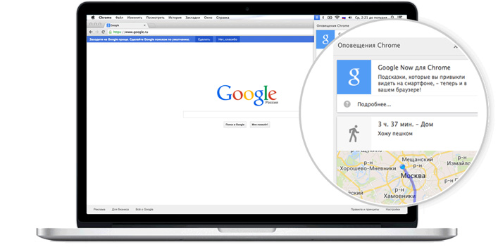

Интернет со скоростью Chrome
Быстрый и удобный браузер для компьютеров, телефонов и планшетов
Для Windows 8.1/8/7/Vista/XP 32-bit
Для Windows 8/7 64-bit
Для Mac OS X 10.6 и более поздних версий
Debian/Ubuntu/Fedora/openSUSE
На компьютере Chromebook уже установлен Chrome.
Браузер будет обновляться автоматически. Приятной работы!
Узнайте больше о Chrome для Android
Узнайте больше о Chrome для iOS
Хотите скачать Chrome для компьютера? Откройте страницу на ПК.
Хотите скачать Chrome для компьютера? Откройте страницу на ПК.
Отправьте мне ссылку по электронной почтеРаботайте быстрее

Находите мгновенно
Поисковые запросы можно вводить прямо в адресную строку. Результаты и подсказки, включающие историю поиска и просмотренные сайты, появляются мгновенно, что помогает сэкономить время! Попробуйте поиск в омнибоксе.
Печатайте меньше
Надоело каждый раз вводить в формы одну и ту же информацию? С автозаполнением для этого нужно всего одно нажатие. Функция доступна и на других устройствах, так что вам больше не придется печатать на маленьком экране. Включите автозаполнение.
Держите важные ссылки под рукой
С браузером Chrome вкладки, история поиска и закладки будут доступны на любом устройстве. Все, что вам нужно, – войти в аккаунт! Подробнее...
С браузером Chrome вкладки, история поиска и закладки будут доступны на любом устройстве. Все, что вам нужно, – войти в аккаунт! Подробнее...
Будьте в курсе последних новостей
Напоминания, новости, прогноз погоды, маршруты – вся информация из Google Now для мобильных устройств теперь доступна и в браузере Chrome на вашем компьютере. Включите Google Now.
Напоминания, новости, прогноз погоды, маршруты – вся информация из Google Now для мобильных устройств теперь доступна и в браузере Chrome на вашем компьютере. Включите Google Now.
Настройте Chrome для себя
Делайте работу в Chrome еще удобнее, устанавливая темы, приложения и расширения. Быстро открывайте любимые сайты, добавив их в закладки или сделав стартовыми страницами. Экономьте время – настройки Chrome синхронизируются на всех устройствах. Настройте Chrome прямо сейчас.

Делайте работу в Chrome еще удобнее, устанавливая темы, приложения и расширения. Быстро открывайте любимые сайты, добавив их в закладки или сделав стартовыми страницами. Экономьте время – настройки Chrome синхронизируются на всех устройствах. Настройте Chrome прямо сейчас.